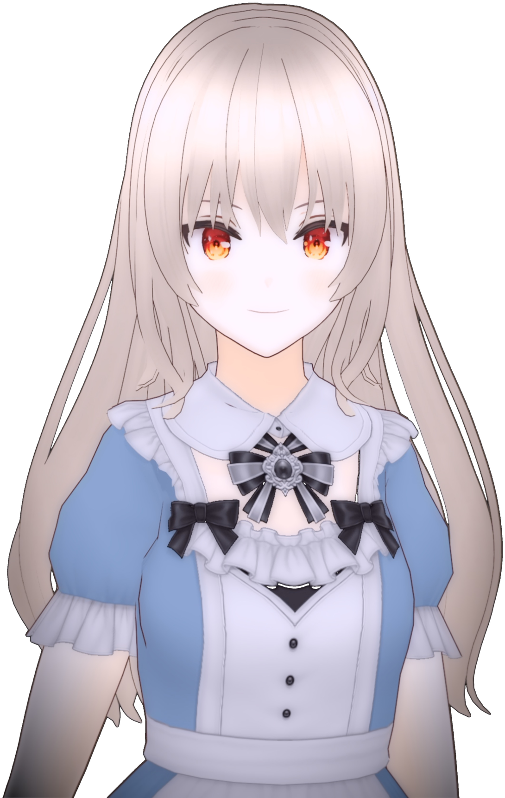

SCROLL
CHAPTER I
爽籟についてAbout
About物語音楽が大好きで、Sound Horizonなどのカバーを中心に活動しています。所属している物語音楽サークル Minimal Sky では、ボーカル、声優、制作、架空言語監修を担当していて、オリジナル曲の制作に関わっています。
YouTubeでのカバー投稿のほか、オリジナル楽曲への参加やコラボレーション、声のお仕事(ナレーション・キャラクターボイス・ボイスドラマ)もお受けしています。
I’m a vocalist with a deep love for narrative music (story-driven concept albums), performing mainly covers of Sound Horizon and similar works. As a member of the narrative music circle Minimal Sky, I contribute to original productions as a vocalist, voice actor, producer, and constructed-language supervisor.
Alongside my cover uploads on YouTube, I’m also available for original song collaborations and voice work, including narration, character voices, and audio dramas.
CHAPTER II
活動領域What I Do
Skills声Voice
透明感のある声質です。歌唱のほか、セリフ・ナレーションにも対応します。
A clear, transparent vocal tone. I perform both sung and spoken material, including dialogue and narration.
コーラスワークChorus Work
ロックから声楽、ポップス、ミュージカル調まで歌い方を調整することで、主旋律に寄り添うハーモニーを重ねられます。YouTubeではハモリチャレンジの投稿をしています。
From rock to classical, pop, and musical-theater styles, I adapt my vocal approach to layer harmonies that complement the lead melody. I regularly post harmony challenge videos on YouTube.
DTM・MIXDTM & Mixing
伴奏制作の経験があり、耳コピからの採譜・譜面の書き起こしができます。YouTubeの音源は自分でMIX・マスタリングしています。
I have experience producing instrumental arrangements and can transcribe music by ear into notation or scores. All audio on my YouTube channel is mixed and mastered by me.
言語Languages
元言語学者で、東京大学やドイツの大学で古代言語を研究していたことがあります。英語・ドイツ語などの楽曲の歌唱・朗読、架空言語の歌唱、架空言語歌詞の作成・監修に対応できます。
As a former linguist, I studied ancient languages at the University of Tokyo and at a university in Germany. I can sing and narrate in English, German, and other languages, perform in constructed languages, and write or supervise constructed-language lyrics.
CHAPTER III
作品Works
WorksLATEST
最新の動画
PICKUPFEATURED
代表作

Cover
壊れたマリオネット
歌唱・Mix(コーラス・ナレーションあり)Vocals & Mix (with chorus & narration)

Cover
辿りつく詩
歌唱・Mix(コーラス・セリフあり)Vocals & Mix (with chorus & dialogue)

Original Album
Dawnprayer
ボーカル・コーラス・声優Vocals / Chorus / Voice Acting
CREDITS
これまでの参加作品
2025
Minimal Sky『Dawnprayer』Minimal Sky “Dawnprayer”Original Album
Vocal・Chorus・Voice
2025
○○様 オリジナル楽曲『(タイトル)』Client song “(Title)”サンプルSample
Chorus・採譜Chorus / Transcription
2024
ボイスドラマ『(タイトル)』Audio drama “(Title)”サンプルSample
Character Voice
2024
『(タイトル)』ナレーションNarration for “(Title)”サンプルSample
Narration
CHAPTER IV
収録環境Recording
Recording防音・吸音処理をした自宅ブースで収録していて、ノイズの少ない音声データを納品することができます。リモートでのディレクションにも対応しています。
I record in a soundproofed and acoustically treated home booth, delivering clean, low-noise audio files. Remote directed sessions are also available.
- FORMAT
- 48kHz / 24bit・データ納品48kHz / 24bit · digital delivery
- MIC
- Aston Spirit
- INTERFACE
- MOTU M2
- DAW
- Logic Pro
- BOOTH
- ISOVOX 2
Commission ご依頼についてCommissions ▶
歌唱・コーラス・声のお仕事をお受けしています。料金は内容により変わりますので、まずはお気軽にご相談ください。
- 歌唱(ワンコーラス)
- ¥5,000〜
- フル尺歌唱・コーラス・セリフ / ナレーション・採譜 など
- ご相談ください
ご依頼の流れ
- ご相談(メールまたはXのDM)
- お見積もり・納期のご確認
- お支払い(前払い)
- 収録・仮音源のご確認
- 修正(2回まで無料)
- 納品
ご依頼にあたって
- 納期
- 内容によりますが、主旋律の歌唱がある場合は納品希望日の3週間以上前にご相談いただけると助かります。
- 修正
- 2回まで無料で対応します。3回目以降は別途ご相談ください。
- 納品形式
- WAV 48kHz / 24bit(その他の形式もご相談ください)。ピッチ・リズム補正後の音源のお渡しも可能です。
- お支払い
- 銀行振込・PayPalに対応しています。お見積もり確定後の前払いをお願いしています。当方の都合で対応できなくなった場合は全額返金いたします。
- 実績記載
- ご依頼いただいた作品は、作品名・担当内容を当サイトの参加作品一覧に記載させていただく場合があります。非公開をご希望の場合はお知らせください。
- お受けできない内容
- R-18作品、宗教・政治に関わる内容はお受けしておりません。
正式なご依頼に至らなくても、お力になれることがあれば嬉しく思います。まずは下のご連絡から、お気軽にご相談ください。
I accept commissions for vocals, chorus work, and voice acting. Rates vary depending on the project — please feel free to reach out for details.
- Vocals (one chorus)
- from ¥5,000
- Full-length vocals / chorus / dialogue & narration / transcription
- Please inquire
Prices are set in JPY; US-dollar amounts are approximate (¥5,000 ≈ US$30).
How It Works
- Initial inquiry (email or DM on X)
- Quote and schedule confirmation
- Payment (in advance)
- Recording and preview delivery
- Revisions (up to 2 rounds free)
- Final delivery
Terms
- Turnaround
- Depends on the project. For lead vocal work, please contact me at least 3 weeks before your desired delivery date.
- Revisions
- Up to 2 rounds of revisions are included. Additional revisions can be arranged separately.
- Delivery format
- WAV 48kHz / 24-bit (other formats available on request). Pitch- and timing-corrected audio can also be provided.
- Payment
- Bank transfer (Japan) or PayPal. Payment is due in advance, after the quote is confirmed. If I become unable to complete the work, you will receive a full refund.
- Credits
- Commissioned works may be listed by title and role on this site’s works list. If you’d prefer your project not to be listed, please let me know.
- Not accepted
- R-18 content and religious or political material.
- Time zone
- I’m based in Japan (JST, UTC+9). Replies may take up to a few days.
Even if it doesn’t lead to a formal commission, I’d be happy to help however I can — feel free to reach out via the Contact section below.
EPILOGUE
ご連絡Contact
Contactご依頼受付中Commissions Open
ご依頼・お見積もり・ご相談は、メールまたはXのDMからお気軽にどうぞ。
For commissions, quotes, or any questions, please contact me via email or DM on X.
Template お問い合わせテンプレートInquiry Template ▶
下記をコピーして、メールまたはDMに貼り付けてご利用ください。決まっていない項目は空欄のままで大丈夫です。
Copy the template below into your email or DM. It’s fine to leave fields blank.
【ご依頼・お問い合わせテンプレート】 ・お名前(名義): ・ご連絡先(メールアドレス等): ・Website / SNS(参考URL): ・ご依頼内容(ご利用目的・内容): ・音源データ(楽曲・REC用データ): ・納品形式: ・ご予算: ・納期: ・クレジット記載(可・不可): ・その他ご要望:
[ ORDER / INQUIRY FORM ] - Client Name: - Contact (email, etc.): - Website / SNS (reference URLs): - Project Details (purpose & content): - Audio Data (song / recording materials): - Delivery Format: - Budget: - Deadline: - Credit (OK to list, or not): - Notes (anything else):